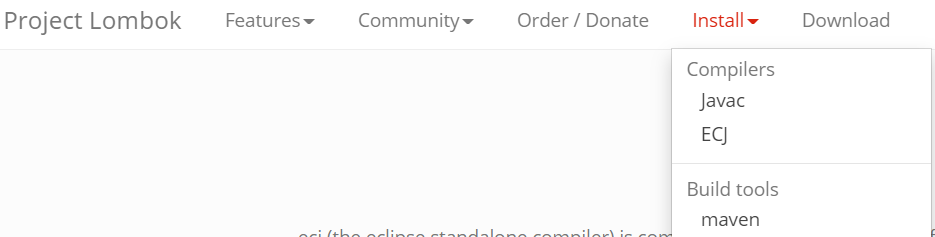

VsCode搭建Java开发环境
破解版的IDEA注册失效，需要重新安装IDEA。开发环境客制化的配置丢失了，一怒之下,果断换到vscode开发java!
专有名词解释
- jdt(java development tools)
- ls(language server)语言服务器
- APT(annotation processing tool)编译时数据注解处理器。它是
javac的一个工具，lombok是其中的一种。 - jdwp(java Debug wire protocol)java调试线协议
- ecj(the eclipse standalone compiler for java)
下载与安装
- 安装vscode
- 安装jdk(可以配置环境变量也可以不配置，直接在vscode配置文件中指定jdk路径)
- 安装maven，配置文件加载优先级，先加载.m2文件下的setting.xml配置，然后加载maven安装目录下的config/settings.xml配置， 同样，maven的bin目录环境变量也可以在vscode配置文件中指定
安装vscode扩展(Java Extension Pack)
微软作为VS Code的官方，直接为我们提供了一个Java Extension Pack的扩展，该扩展其实就是包含了6 个扩展的组合包，这些扩展并不全是微软开发的，只是方便我们一次安装到位而已：
-
Language Support for Java™ by Red Hat
代码导航、自动完成、重构、代码片段
-
Debugger for Java
运行和调试
-
Java Test Runner
运行和测试
-
Maven for Java
项目支持、自定义目标
-
Java Dependency Viewer
项目视图，依赖库，资源文件等显示。
-
Visual Studio IntelliCode
开发智能助手
APT工具(lombok)
由于项目使用了lombok数据注解处理工具，但是微软插件marketplace提供的lombok的插件过于陈旧，所以直接安装的话在项目中会提示，一堆的class找不到。因此我们需要手动配置java.jdt.ls.vmargs配置java虚拟机的参数。因为项目使用maven下载了lombok的依赖，所以我们直接配置vscode的user settings:
"java.jdt.ls.vmargs": "-XX:+UseParallelGC -XX:GCTimeRatio=4 -XX:AdaptiveSizePolicyWeight=90 -Dsun.zip.disableMemoryMapping=true -Xmx1G -Xms100m -javaagent:\"C:\\Users\\Administrator\\.m2\\repository\\org\\projectlombok\\lombok\\1.18.6\\lombok-1.18.6.jar\"",
然后重新编译整个项目，当使用debugger工具调试的时候Java Language Server就会带上参数-javaagent
关于lombok的配置可以参考官网的操作 
vscode的配置
当使用Debugger for Java调试程序的时候，需要使用Language Support for Java by Red Hat。语言服务要求我们使用最新版本的jdk，
会弹出让我们下载AdoptOpenJDK，并且需要配置java.home:
//这个配置节，使用最新的jdk来启动Java Language Server.
"java.home": "C:\\Program Files\\AdoptOpenJDK\\jdk-11.0.9.11-hotspot",
由于项目本身使用是jdk8,因此需要将Java Execution Environments映射到本地jdk
"java.configuration.runtimes": [
{
"name": "JavaSE-1.8",
"path": "C:\\Program Files\\Java\\jdk1.8.0_261",
"default": true,
},
],
还要配置mave的可执行环境路径
"maven.executable.path": "D:\\Program Files (x86)\\apache-maven-3.6.3\\bin\\mvn",
"maven.terminal.customEnv": [
{
"environmentVariable": "JAVA_HOME",
"value": "C:\\Program Files\\Java\\jdk1.8.0_261"
}
],
workspace的作用
使用vscode的时候，可以将当前文件夹保存未工作区。并且针对不同的工作区可以禁用掉不使用的插件，这下工作区显示的干净多了，不会再加载不必要的插件了。
有两个选项
- 第一个选项“禁用”为你的用户设置
- 第二个选项“禁用（工作区）”为工作区设置
选择“禁用（工作区）”。
结尾
现在可以使用vscode尽情的玩耍了